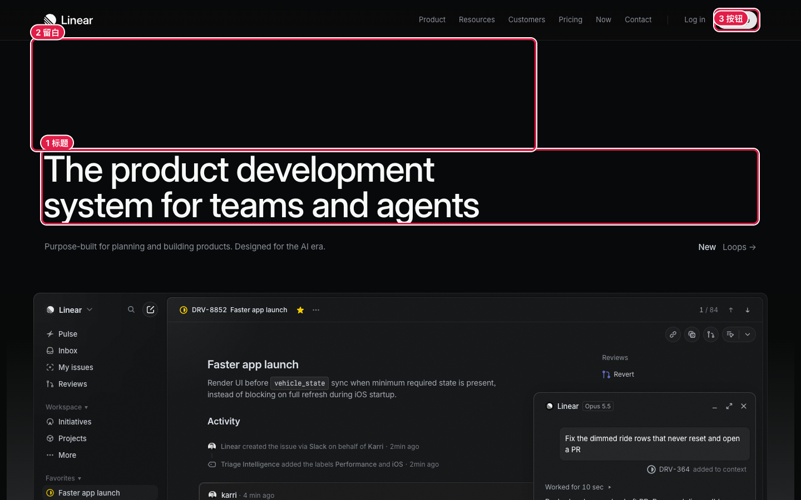
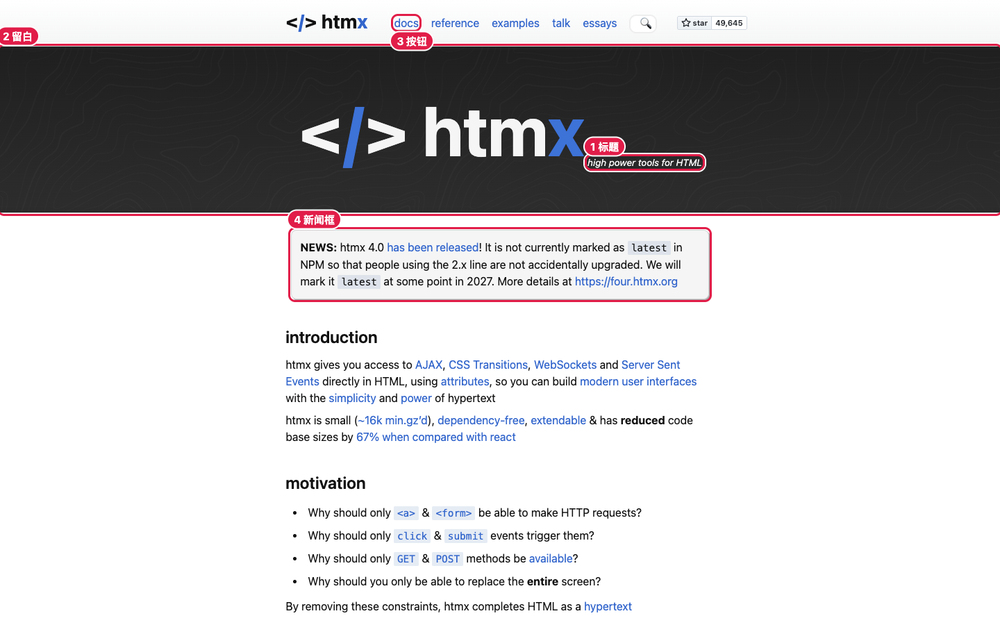
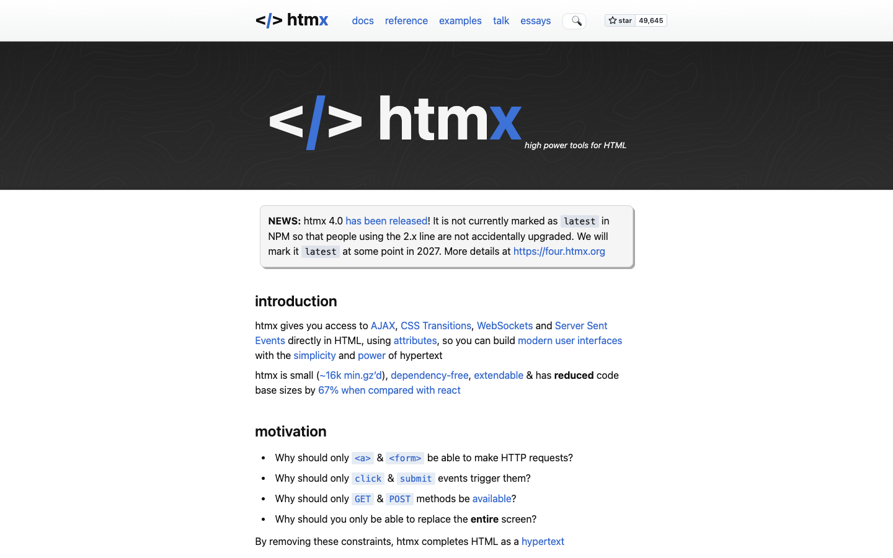
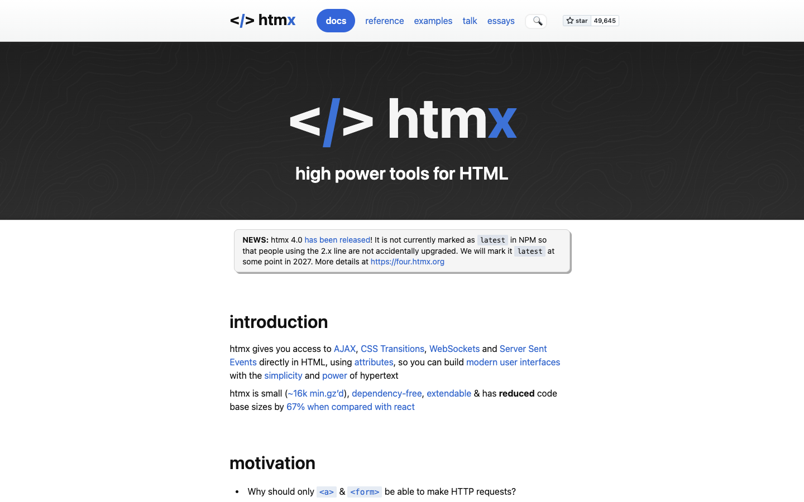

htmx.org 首页 · 参考 Linear 的改版指令卡
页面目标：第一次来的开发者 10 秒内看懂 htmx 是什么、该点哪里开始用（docs / 安装）。


一、想借鉴的 → 对应我页面的哪里
| 编号 | 类型 | 参考图里的位置 | 好在哪 | 对应我页面的区域 |
|---|---|---|---|---|
| B1 | 标题层级 | 首屏 H1 64px（正文 13px 的 4.9 倍），一句话，字重 510 | 一眼就知道“这是什么”；整页只有 6 档字号，层级清楚 | 首屏横幅里“high power tools for HTML”这句（现在是 14px 小斜体，页面里没有 H1 级的一句话说明）.dark-hero .main sub |
| B2 | 留白 | 导航到 H1 之间空 199px，各区块上内边距 128px | 重点内容四周有空气，眼睛知道先看哪里 | 首屏横幅（高 240px）及各章节标题（上内边距只有 24px 左右）.dark-hero ； main.c.content > h2 |
| B3 | 按钮样式 | 导航右上角 Sign up：浅色实心、全圆角（9999px）、高 32px | 整个首屏只有这一个实心块，一眼就是“该点这里” | 导航里的 docs 链接（现在是普通蓝字，跟 reference/examples 没区别）.top-nav a[href='/docs/'] |
二、这些地方不动
- 黑底横幅里的 </> htmx 大 logo：品牌识别，已经够大，借鉴的是它下面那句话，不是换 logo
- quick start 的代码块、下面的 book 与 sponsors 区：内容和顺序不动：开发者要的就是代码；本卡只改字号、间距、按钮样式
- 整体单栏 640px 的阅读宽度：正文行宽 618px 与 Linear 的 620px 几乎一样，是合适的，不借鉴 Linear 的 1416px 宽版式
- Linear 首屏下方的大产品截图：htmx 没有界面可展示，用代码块代替就好
- Linear 的深色整页配色：只借鉴层级与留白，不换配色
三、改版清单（按优先级）
P0P0-1 把一句话说明做成首屏最大的文字✅ 实测已达标
- 改哪里
- 黑底横幅里 .dark-hero .main sub（“high power tools for HTML”）
- 怎么改
- 从 14px 小斜体改成 32px、字重 600、不斜体、白色，放在 logo 正下面单独一行。想再进一步，把它换成说清用途的一句（例如“用 HTML 属性直接发 AJAX 请求”），这是文案，不是样式，由你定。
.dark-hero .main sub, .dark-hero .main sub i { display:block; font-size:32px; font-style:normal; font-weight:600; color:#fff; margin-top:12px; } - 怎么看改对了
- 打开首页，不滚动，一眼能读到这句话；用浏览器量，这句字号 ≥ 28px（约为正文 16px 的 2 倍，Linear 是 4.9 倍）
- 借鉴点
- B1
P0P0-2 把 docs 做成首页唯一的实心按钮✅ 实测已达标
- 改哪里
- 导航里 .top-nav a[href='/docs/']
- 怎么改
- 背景 #3465d9（htmx 自己的蓝）、白字、全圆角、上下内边距 6px、左右 16px，保证高度 ≥ 32px。这是纯 CSS 的最小改法；想做得更彻底，再在首屏横幅下面加一个“Get started”链接指向 quick start（要改 HTML，本卡不动结构）。
.top-nav a[href="/docs/"] { display:inline-block; background:#3465d9; color:#fff; border-radius:999px; padding:6px 16px; font-weight:600; } - 怎么看改对了
- 首屏里 docs 是唯一的实心色块；量：背景不透明、圆角 ≥ 16px、高 ≥ 32px
- 借鉴点
- B3
P1P1-1 首屏横幅加高，让一句话周围有空气✅ 实测已达标
- 改哪里
- .dark-hero
- 怎么改
- 横幅原样式写死了 height:240px 和 line-height:240px（靠大行高把字撑到中间），只加内边距不会变高。要改成 height:auto; min-height:320px，行高恢复正常，用 flex 居中。Linear 的 H1 离导航有 199px 空白，htmx 不用那么夸张，≥ 320px 即可。
.dark-hero { height:auto; min-height:320px; line-height:1.2; display:flex; align-items:center; justify-content:center; } - 怎么看改对了
- 横幅高度 ≥ 320px，且 logo 与那句话在横幅里仍然居中、不贴边
- 借鉴点
- B2
P1P1-2 章节标题放大并拉开章节间距✅ 实测已达标
- 改哪里
- main.c.content > h2（introduction / motivation / quick start / book / sponsors）
- 怎么改
- h2 从 24px 升到 32px（与正文的比值从 1.5 到 2.0），章节上外边距设 72px（现在约 24px 内边距加默认外边距，借鉴 Linear 区块间 128px 的方向，但取一半，避免页面过长）。
main.c.content > h2 { font-size:32px; margin-top:72px; } - 怎么看改对了
- h2 字号 ≥ 32px，第二个 h2 上外边距 ≥ 64px；扫一眼页面能数出 introduction / motivation / quick start 三个段落的起点
- 借鉴点
- B1
P2P2-1 新闻框收小，别抢在介绍前面✅ 实测已达标
- 改哪里
- main.c.content .alert（NEWS: htmx 4.0 …）
- 怎么改
- 字号 14px、行高 1.4、内边距 8px 14px，高度压到 ≤ 90px。新闻还在，只是不再是第一屏占位最大的块。
main.c.content .alert { font-size:14px; line-height:1.4; padding:8px 14px; margin:16px 8px; } - 怎么看改对了
- 框高 ≤ 90px，introduction 标题往上移
- 借鉴点
- B2
四、套上改动后的样子（浏览器临时预览）

